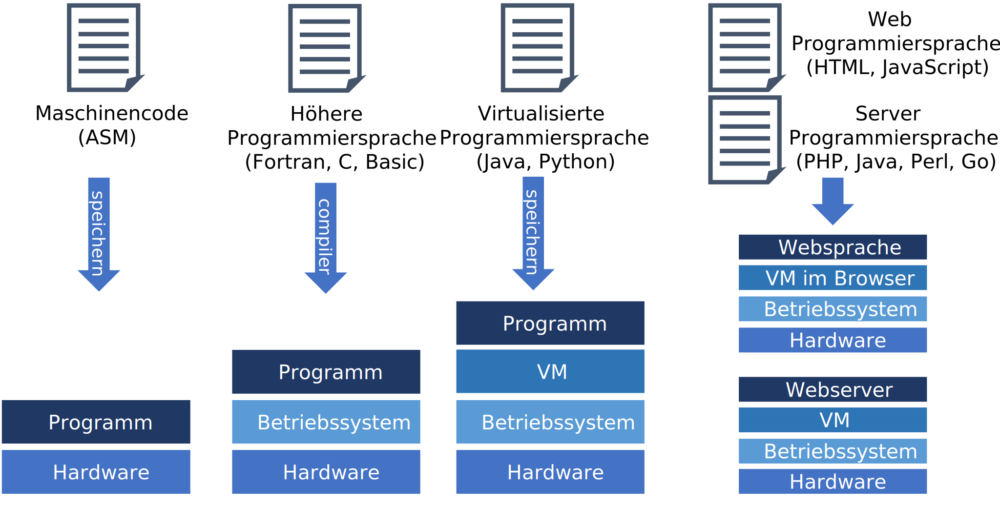

Softwarearchitektur#
Folien#
Monolithische, maschinennahe Software vor 1950#
Problem: Dabei entstand das Problem, dass Programme für neue Hardware meist komplett neu geschrieben oder stark angepasst werden mussten.

Aufteilung in Betriebssysteme und Monolithische Software ab ca. 1960#
Problem: Die Programme sind sehr schwer zu schreiben, weil sie sehr gutes Verständnis der Hardware, der Treiber und der Betriebssystemfunktionen erfordern. Sie sind sehr low-level und bieten wenig Abstraktion.

Entwicklung von höheren Programmiersprachen ab ca. 1970#
Problem: Wenn sich die Betriebssysteme ändern, so funktionieren Programme nicht und müssen entweder neu Kompiliert werden oder umgeschrieben werden.
Virtualisierung Monolithischer Software ab ca. 1995#
Dadurch wurde es auch einfacher neue Betriebsysteme zu entwickeln, weshalb auch Android und iOS für mobile Geräte entstanden sind, die sehr stark Virtualisierung nutzen.
Problem: Mit dem Internet entwickelte sich der Bedarf nicht nur Text und Bilder zu teilen, sondern auch Inhalte auf Webseiten dynamisch anzupassen und kleinere (bis größere) Programme auszuführen. Um von verschiedenen Geräten auf die Daten zuzugreifen, braucht man einen zentralen Punkt um die Daten zu speichern und komplexere Berechnungen auszuführen.

Verteilte, Virtualisierte Software im Internet ab ca. 2000#
Diese Architektur trennt die Frontend-Anwendungen von den Backend-Servern. Die Frontend-Anwendungen sind für die Darstellung der Inhalte und die Interaktion mit den Nutzern zuständig, während die Backend-Server die Webseiten bereitstellen und die Langzeitdaten in Datenbanken verwalten. Diese Trennung ermöglicht es, dass Frontend-Anwendungen (Webseiten oder Apps) die Inhalte visualisieren und mit den Nutzern interagieren können, ohne dass sie direkt auf die Datenbanken zugreifen müssen.
Problem: Im Internet greifen oft sehr viele Nutzer gleichzeitig auf die gleichen Server (Seiten) zu. Um diese nicht zu überlasten, brauchte man Wege diese bei Bedarf schnell zu duplizieren. Mit der Entwicklung von mobilen Geräten (Smart Phones, Tablets, etc.) gab es immer mehr relativ kleine spezialisierte Anwendungen (Apps) Hier kann der Bedarf an Rechenkapazitäten dynamisch schnell wachsen und man benötigte auch dynamisch skallierbare Server.

Verteilte, Virtualisierte Apps und Cloud Software ab ca. 2010#
Problem: Die resultierenden modernen verteilten Anwendungen weisen eine sehr hohe Komplexität auf. Es gibt viele spezialisierte Programmiersprachen und Teilarchitekturen, um einzelne Probleme darin zu lösen.

Klassifikation der Programmiersprachen nach historischer Anwendung#
Die Programmiersprachen haben sich entsprechend den Architekturen auch mit der Zeit entwickelt. Deshalb änderten sich auch über die Zeit die beliebten Programmiersprachen.
